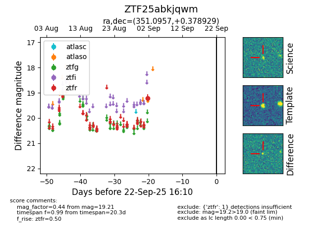

FINK: ZTF25abkjqwm
Lasair: ZTF25abkjqwm
ALeRCE: ZTF25abkjqwm
ZTF25abkjqwm (ztf,fink)
equatorial (ra, dec) = (351.0957,+0.37893)
galactic (l, b) = (82.1197,-55.43838)

last ztfr=19.21
1 ztfr detections